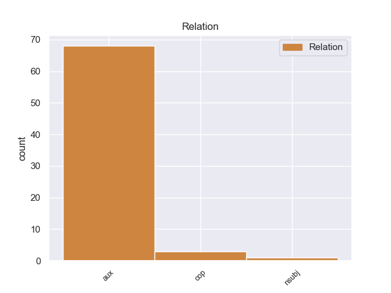
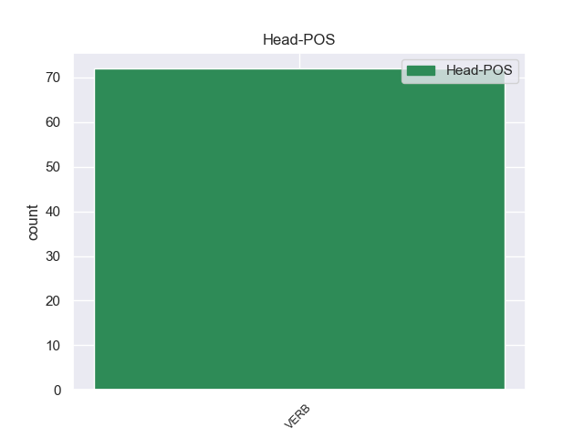
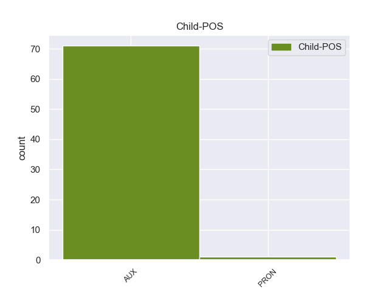

Distribution of features within this leaf



Agreement Rules sorted by frequency.
- When the dependent token is the auxiliary(aux) of the head token, and the dependent token is AUX.
1 Συνεπώς _ _ _ _ 0 _ _ _
2 , _ _ _ _ 0 _ _ _
3 η _ _ _ _ 0 _ _ _
4 παρούσα _ _ _ _ 0 _ _ _
5 αίτηση _ _ _ _ 0 _ _ _
6 άρσης _ _ _ _ 0 _ _ _
7 της _ _ _ _ 0 _ _ _
8 ασυλίας _ _ _ _ 0 _ _ _
9 δεν _ _ _ _ 0 _ _ _
10 αφορά _ _ _ _ 0 _ _ _
11 το _ _ _ _ 0 _ _ _
12 ζήτημα _ _ _ _ 0 _ _ _
13 εάν _ _ _ _ 0 _ _ _
14 οι _ _ _ _ 0 _ _ _
15 διώξεις _ _ _ _ 0 _ _ _
16 μπορούν _ _ _ _ 0 _ _ _
17 ή _ _ _ _ 0 _ _ _
18 πρέπει πρέπει AUX _ Aspect=Imp|Mood=Ind|Number=Sing|Person=3|Tense=Pres|VerbForm=Fin|Voice=Act 20 aux _ _
19 να _ _ _ _ 0 _ _ _
20 συνεχιστούν συνεχιω VERB _ Aspect=Imp|Mood=Ind|Number=Plur|Person=3|Tense=Pres|VerbForm=Fin|Voice=Pass 0 _ _ _
21 με _ _ _ _ 0 _ _ _
22 βάση _ _ _ _ 0 _ _ _
23 το _ _ _ _ 0 _ _ _
24 γαλλικό _ _ _ _ 0 _ _ _
25 δίκαιο _ _ _ _ 0 _ _ _
26 . _ _ _ _ 0 _ _ _
1 Το _ _ _ _ 0 _ _ _
2 μόνο _ _ _ _ 0 _ _ _
3 συνεπώς _ _ _ _ 0 _ _ _
4 που _ _ _ _ 0 _ _ _
5 μπορούσαν _ _ _ _ 0 _ _ _
6 να _ _ _ _ 0 _ _ _
7 κάνουν _ _ _ _ 0 _ _ _
8 ήταν _ _ _ _ 0 _ _ _
9 ν' _ _ _ _ 0 _ _ _
10 αυξήσουν _ _ _ _ 0 _ _ _
11 την _ _ _ _ 0 _ _ _
12 επιρροή _ _ _ _ 0 _ _ _
13 τους _ _ _ _ 0 _ _ _
14 σ _ _ _ _ 0 _ _ _
15 τους _ _ _ _ 0 _ _ _
16 πληθυσμούς _ _ _ _ 0 _ _ _
17 της _ _ _ _ 0 _ _ _
18 περιοχής _ _ _ _ 0 _ _ _
19 , _ _ _ _ 0 _ _ _
20 παράλληλα _ _ _ _ 0 _ _ _
21 μ' _ _ _ _ 0 _ _ _
22 εκείνη _ _ _ _ 0 _ _ _
23 προς _ _ _ _ 0 _ _ _
24 τον _ _ _ _ 0 _ _ _
25 Σουλτάνο _ _ _ _ 0 _ _ _
26 σ _ _ _ _ 0 _ _ _
27 τη _ _ _ _ 0 _ _ _
28 Κωνσταντινούπολη _ _ _ _ 0 _ _ _
29 , _ _ _ _ 0 _ _ _
30 για _ _ _ _ 0 _ _ _
31 όσο _ _ _ _ 0 _ _ _
32 χρόνο _ _ _ _ 0 _ _ _
33 θα _ _ _ _ 0 _ _ _
34 " _ _ _ _ 0 _ _ _
35 παρέμενε _ _ _ _ 0 _ _ _
36 " _ _ _ _ 0 _ _ _
37 ( _ _ _ _ 0 _ _ _
38 ή _ _ _ _ 0 _ _ _
39 θα _ _ _ _ 0 _ _ _
40 του _ _ _ _ 0 _ _ _
41 επέτρεπαν _ _ _ _ 0 _ _ _
42 ) _ _ _ _ 0 _ _ _
43 τη _ _ _ _ 0 _ _ _
44 συνέχεια _ _ _ _ 0 _ _ _
45 της _ _ _ _ 0 _ _ _
46 Αυτοκρατορίας _ _ _ _ 0 _ _ _
47 του _ _ _ _ 0 _ _ _
48 , _ _ _ _ 0 _ _ _
49 προκειμένου _ _ _ _ 0 _ _ _
50 να _ _ _ _ 0 _ _ _
51 είναι _ _ _ _ 0 _ _ _
52 έτοιμες _ _ _ _ 0 _ _ _
53 να _ _ _ _ 0 _ _ _
54 υποστηρίξουν _ _ _ _ 0 _ _ _
55 ένα _ _ _ _ 0 _ _ _
56 ή _ _ _ _ 0 _ _ _
57 περισσότερους _ _ _ _ 0 _ _ _
58 από _ _ _ _ 0 _ _ _
59 τους _ _ _ _ 0 _ _ _
60 διαδόχους _ _ _ _ 0 _ _ _
61 του _ _ _ _ 0 _ _ _
62 οθωμανικού _ _ _ _ 0 _ _ _
63 καθεστώτος _ _ _ _ 0 _ _ _
64 που _ _ _ _ 0 _ _ _
65 θα _ _ _ _ 0 _ _ _
66 μπορούσαν μποροώ VERB _ Aspect=Perf|Mood=Ind|Number=Plur|Person=3|Tense=Past|VerbForm=Fin|Voice=Act 0 _ _ _
67 να _ _ _ _ 0 _ _ _
68 ήταν είμαι AUX _ Aspect=Imp|Mood=Ind|Number=Plur|Person=3|Tense=Past|VerbForm=Fin|Voice=Pass 66 cop _ _
69 οι _ _ _ _ 0 _ _ _
70 Σέρβοι _ _ _ _ 0 _ _ _
71 , _ _ _ _ 0 _ _ _
72 οι _ _ _ _ 0 _ _ _
73 Έλληνες _ _ _ _ 0 _ _ _
74 , _ _ _ _ 0 _ _ _
75 οι _ _ _ _ 0 _ _ _
76 Βούλγαροι _ _ _ _ 0 _ _ _
77 , _ _ _ _ 0 _ _ _
78 οι _ _ _ _ 0 _ _ _
79 Αλβανοί _ _ _ _ 0 _ _ _
80 , _ _ _ _ 0 _ _ _
81 ακόμα _ _ _ _ 0 _ _ _
82 και _ _ _ _ 0 _ _ _
83 οι _ _ _ _ 0 _ _ _
84 γηγενείς _ _ _ _ 0 _ _ _
85 Μακεδόνες _ _ _ _ 0 _ _ _
86 , _ _ _ _ 0 _ _ _
87 που _ _ _ _ 0 _ _ _
88 οι _ _ _ _ 0 _ _ _
89 πιθανότητές _ _ _ _ 0 _ _ _
90 να _ _ _ _ 0 _ _ _
91 ιδρύσουν _ _ _ _ 0 _ _ _
92 ανεξάρτητα _ _ _ _ 0 _ _ _
93 έθνη _ _ _ _ 0 _ _ _
94 δεν _ _ _ _ 0 _ _ _
95 ήταν _ _ _ _ 0 _ _ _
96 και _ _ _ _ 0 _ _ _
97 εντελώς _ _ _ _ 0 _ _ _
98 ανύπαρκτες _ _ _ _ 0 _ _ _
99 . _ _ _ _ 0 _ _ _
1 Έτσι _ _ _ _ 0 _ _ _
2 , _ _ _ _ 0 _ _ _
3 σ _ _ _ _ 0 _ _ _
4 το _ _ _ _ 0 _ _ _
5 όνομα _ _ _ _ 0 _ _ _
6 της _ _ _ _ 0 _ _ _
7 αυτοδιάθεσης _ _ _ _ 0 _ _ _
8 των _ _ _ _ 0 _ _ _
9 λαών _ _ _ _ 0 _ _ _
10 , _ _ _ _ 0 _ _ _
11 εμείς εγώ PRON _ Aspect=Imp|Mood=Ind|Number=Plur|Person=1|Tense=Pres|VerbForm=Fin|Voice=Act 12 nsubj _ _
12 υποστηρίζουμε υποστηρίζοω VERB _ Aspect=Imp|Mood=Ind|Number=Plur|Person=1|Tense=Pres|VerbForm=Fin|Voice=Act 0 _ _ _
13 το _ _ _ _ 0 _ _ _
14 δικαίωμα _ _ _ _ 0 _ _ _
15 των _ _ _ _ 0 _ _ _
16 λαών _ _ _ _ 0 _ _ _
17 να _ _ _ _ 0 _ _ _
18 χρησιμοποιήσουν _ _ _ _ 0 _ _ _
19 ξανά _ _ _ _ 0 _ _ _
20 κάποια _ _ _ _ 0 _ _ _
21 στιγμή _ _ _ _ 0 _ _ _
22 σ _ _ _ _ 0 _ _ _
23 το _ _ _ _ 0 _ _ _
24 μέλλον _ _ _ _ 0 _ _ _
25 το _ _ _ _ 0 _ _ _
26 εθνικό _ _ _ _ 0 _ _ _
27 τους _ _ _ _ 0 _ _ _
28 νόμισμα _ _ _ _ 0 _ _ _
29 όπως _ _ _ _ 0 _ _ _
30 έπραξαν _ _ _ _ 0 _ _ _
31 πριν _ _ _ _ 0 _ _ _
32 από _ _ _ _ 0 _ _ _
33 λίγο _ _ _ _ 0 _ _ _
34 καιρό _ _ _ _ 0 _ _ _
35 οι _ _ _ _ 0 _ _ _
36 λαοί _ _ _ _ 0 _ _ _
37 που _ _ _ _ 0 _ _ _
38 απελευθερώθηκαν _ _ _ _ 0 _ _ _
39 από _ _ _ _ 0 _ _ _
40 τον _ _ _ _ 0 _ _ _
41 σοβιετικό _ _ _ _ 0 _ _ _
42 ομοσπονδιακό _ _ _ _ 0 _ _ _
43 ζυγό _ _ _ _ 0 _ _ _
44 . _ _ _ _ 0 _ _ _
Disagree Examples:
1 Ο _ _ _ _ 0 _ _ _
2 λόγος _ _ _ _ 0 _ _ _
3 που _ _ _ _ 0 _ _ _
4 διαθέτουμε _ _ _ _ 0 _ _ _
5 κανόνες _ _ _ _ 0 _ _ _
6 για _ _ _ _ 0 _ _ _
7 τις _ _ _ _ 0 _ _ _
8 κρατικές _ _ _ _ 0 _ _ _
9 ενισχύσεις _ _ _ _ 0 _ _ _
10 είναι _ _ _ _ 0 _ _ _
11 η _ _ _ _ 0 _ _ _
12 διασφάλιση _ _ _ _ 0 _ _ _
13 της _ _ _ _ 0 _ _ _
14 ορθής _ _ _ _ 0 _ _ _
15 λειτουργίας _ _ _ _ 0 _ _ _
16 της _ _ _ _ 0 _ _ _
17 κοινής _ _ _ _ 0 _ _ _
18 αγοράς _ _ _ _ 0 _ _ _
19 και _ _ _ _ 0 _ _ _
20 πρέπει _ _ _ _ 0 _ _ _
21 να _ _ _ _ 0 _ _ _
22 καταργήσουμε _ _ _ _ 0 _ _ _
23 τους _ _ _ _ 0 _ _ _
24 φραγμούς _ _ _ _ 0 _ _ _
25 σ _ _ _ _ 0 _ _ _
26 τον _ _ _ _ 0 _ _ _
27 ανταγωνισμό _ _ _ _ 0 _ _ _
28 και _ _ _ _ 0 _ _ _
29 σ _ _ _ _ 0 _ _ _
30 το _ _ _ _ 0 _ _ _
31 ελεύθερο _ _ _ _ 0 _ _ _
32 εμπόριο _ _ _ _ 0 _ _ _
33 προκειμένου _ _ _ _ 0 _ _ _
34 να _ _ _ _ 0 _ _ _
35 επιτρέψουμε _ _ _ _ 0 _ _ _
36 σ _ _ _ _ 0 _ _ _
37 την _ _ _ _ 0 _ _ _
38 Επιτροπή _ _ _ _ 0 _ _ _
39 να _ _ _ _ 0 _ _ _
40 ασκεί _ _ _ _ 0 _ _ _
41 αστυνόμευση _ _ _ _ 0 _ _ _
42 , _ _ _ _ 0 _ _ _
43 ενώ _ _ _ _ 0 _ _ _
44 το _ _ _ _ 0 _ _ _
45 Συμβούλιο _ _ _ _ 0 _ _ _
46 θα _ _ _ _ 0 _ _ _
47 έπρεπε πρέπει AUX AUX Aspect=Imp|Mood=Ind|Number=Sing|Person=3|Tense=Past|VerbForm=Fin|Voice=Act 50 aux _ _
48 πραγματικά _ _ _ _ 0 _ _ _
49 να _ _ _ _ 0 _ _ _
50 ντρέπεται ντρέπομαι VERB VERB Aspect=Imp|Mood=Ind|Number=Sing|Person=3|Tense=Pres|VerbForm=Fin|Voice=Pass 0 _ _ _
51 που _ _ _ _ 0 _ _ _
52 προκαλεί _ _ _ _ 0 _ _ _
53 την _ _ _ _ 0 _ _ _
54 Επιτροπή _ _ _ _ 0 _ _ _
55 σε _ _ _ _ 0 _ _ _
56 αυτόν _ _ _ _ 0 _ _ _
57 τον _ _ _ _ 0 _ _ _
58 συγκεκριμένο _ _ _ _ 0 _ _ _
59 τομέα _ _ _ _ 0 _ _ _
60 . _ _ _ _ 0 _ _ _
1 Θα _ _ _ _ 0 _ _ _
2 έπρεπε πρέπει AUX AUX Aspect=Imp|Mood=Ind|Number=Sing|Person=3|Tense=Past|VerbForm=Fin|Voice=Act 4 aux _ _
3 να _ _ _ _ 0 _ _ _
4 περνούν περνώ VERB VERB Aspect=Imp|Mood=Ind|Number=Plur|Person=3|Tense=Pres|VerbForm=Fin|Voice=Act 0 _ _ _
5 τον _ _ _ _ 0 _ _ _
6 περισσότερο _ _ _ _ 0 _ _ _
7 χρόνο _ _ _ _ 0 _ _ _
8 τους _ _ _ _ 0 _ _ _
9 εδώ _ _ _ _ 0 _ _ _
10 . _ _ _ _ 0 _ _ _
1 Σ _ _ _ _ 0 _ _ _
2 τις _ _ _ _ 0 _ _ _
3 3_Σεπτεμβρίου_1895 _ _ _ _ 0 _ _ _
4 ξέσπασε _ _ _ _ 0 _ _ _
5 επανάσταση _ _ _ _ 0 _ _ _
6 , _ _ _ _ 0 _ _ _
7 που _ _ _ _ 0 _ _ _
8 δεν _ _ _ _ 0 _ _ _
9 βρήκε _ _ _ _ 0 _ _ _
10 σύμφωνο _ _ _ _ 0 _ _ _
11 το _ _ _ _ 0 _ _ _
12 Βενιζέλο _ _ _ _ 0 _ _ _
13 , _ _ _ _ 0 _ _ _
14 ο _ _ _ _ 0 _ _ _
15 οποίος _ _ _ _ 0 _ _ _
16 θεωρούσε _ _ _ _ 0 _ _ _
17 ότι _ _ _ _ 0 _ _ _
18 οι _ _ _ _ 0 _ _ _
19 Κρητικοί _ _ _ _ 0 _ _ _
20 δεν _ _ _ _ 0 _ _ _
21 έπρεπε πρέπει AUX AUX Aspect=Imp|Mood=Ind|Number=Sing|Person=3|Tense=Past|VerbForm=Fin|Voice=Act 23 aux _ _
22 να _ _ _ _ 0 _ _ _
23 ενεργούν ενεργώ VERB VERB Aspect=Imp|Mood=Ind|Number=Plur|Person=3|Tense=Pres|VerbForm=Fin|Voice=Act 0 _ _ _
24 αυτοβούλως _ _ _ _ 0 _ _ _
25 αλλά _ _ _ _ 0 _ _ _
26 σε _ _ _ _ 0 _ _ _
27 συνεννόηση _ _ _ _ 0 _ _ _
28 με _ _ _ _ 0 _ _ _
29 την _ _ _ _ 0 _ _ _
30 ελληνική _ _ _ _ 0 _ _ _
31 κυβέρνηση _ _ _ _ 0 _ _ _
32 σ _ _ _ _ 0 _ _ _
33 την _ _ _ _ 0 _ _ _
34 Αθήνα _ _ _ _ 0 _ _ _
35 . _ _ _ _ 0 _ _ _
1 Ακολούθησε _ _ _ _ 0 _ _ _
2 μια _ _ _ _ 0 _ _ _
3 μακρά _ _ _ _ 0 _ _ _
4 περίοδος _ _ _ _ 0 _ _ _
5 έντασης _ _ _ _ 0 _ _ _
6 μεταξύ _ _ _ _ 0 _ _ _
7 Γιουγκοσλαβίας _ _ _ _ 0 _ _ _
8 και _ _ _ _ 0 _ _ _
9 Βουλγαρίας _ _ _ _ 0 _ _ _
10 , _ _ _ _ 0 _ _ _
11 με _ _ _ _ 0 _ _ _
12 αμοιβαίες _ _ _ _ 0 _ _ _
13 επιρρίψεις _ _ _ _ 0 _ _ _
14 ευθυνών _ _ _ _ 0 _ _ _
15 για _ _ _ _ 0 _ _ _
16 προσπάθεια _ _ _ _ 0 _ _ _
17 προσέγγισης _ _ _ _ 0 _ _ _
18 της _ _ _ _ 0 _ _ _
19 Γιουγκοσλαβικής _ _ _ _ 0 _ _ _
20 Μακεδονίας _ _ _ _ 0 _ _ _
21 , _ _ _ _ 0 _ _ _
22 ενώ _ _ _ _ 0 _ _ _
23 ταυτόχρονα _ _ _ _ 0 _ _ _
24 οι _ _ _ _ 0 _ _ _
25 αρχές _ _ _ _ 0 _ _ _
26 του _ _ _ _ 0 _ _ _
27 κράτους _ _ _ _ 0 _ _ _
28 των _ _ _ _ 0 _ _ _
29 Σκοπίων _ _ _ _ 0 _ _ _
30 είχαν _ _ _ _ 0 _ _ _
31 αρχίσει _ _ _ _ 0 _ _ _
32 μια _ _ _ _ 0 _ _ _
33 συντονισμένη _ _ _ _ 0 _ _ _
34 εκστρατεία _ _ _ _ 0 _ _ _
35 για _ _ _ _ 0 _ _ _
36 τη _ _ _ _ 0 _ _ _
37 διάδοση _ _ _ _ 0 _ _ _
38 των _ _ _ _ 0 _ _ _
39 θέσεών _ _ _ _ 0 _ _ _
40 τους _ _ _ _ 0 _ _ _
41 , _ _ _ _ 0 _ _ _
42 που _ _ _ _ 0 _ _ _
43 είχαν έχω AUX _ Aspect=Imp|Mood=Ind|Number=Sing|Person=3|Tense=Past|VerbForm=Fin|Voice=Act 45 aux _ _
44 να _ _ _ _ 0 _ _ _
45 κάνουν κάνπτω VERB _ Aspect=Imp|Mood=Ind|Number=Plur|Person=3|Tense=Pres|VerbForm=Fin|Voice=Act 0 _ _ _
46 με _ _ _ _ 0 _ _ _
47 την _ _ _ _ 0 _ _ _
48 ταύτισή _ _ _ _ 0 _ _ _
49 τους _ _ _ _ 0 _ _ _
50 με _ _ _ _ 0 _ _ _
51 τους _ _ _ _ 0 _ _ _
52 Αρχαίους _ _ _ _ 0 _ _ _
53 Μακεδόνες _ _ _ _ 0 _ _ _
54 και _ _ _ _ 0 _ _ _
55 την _ _ _ _ 0 _ _ _
56 αλύτρωτη _ _ _ _ 0 _ _ _
57 μακεδονική _ _ _ _ 0 _ _ _
58 εθνότητα _ _ _ _ 0 _ _ _
59 που _ _ _ _ 0 _ _ _
60 ζει _ _ _ _ 0 _ _ _
61 σ _ _ _ _ 0 _ _ _
62 την _ _ _ _ 0 _ _ _
63 Ελληνική _ _ _ _ 0 _ _ _
64 Μακεδονία _ _ _ _ 0 _ _ _
65 . _ _ _ _ 0 _ _ _
1 Εξαιτίας _ _ _ _ 0 _ _ _
2 του _ _ _ _ 0 _ _ _
3 , _ _ _ _ 0 _ _ _
4 όπως _ _ _ _ 0 _ _ _
5 έχει έχω AUX _ Aspect=Imp|Mood=Ind|Number=Sing|Person=3|Tense=Pres|VerbForm=Fin|Voice=Act 6 aux _ _
6 οριστεί οριώ VERB _ Aspect=Perf|Mood=Ind|Number=Sing|Person=3|Tense=Past|VerbForm=Fin|Voice=Act 0 _ _ _
7 , _ _ _ _ 0 _ _ _
8 κινεζικού _ _ _ _ 0 _ _ _
9 απαρτχάιντ _ _ _ _ 0 _ _ _
10 , _ _ _ _ 0 _ _ _
11 οι _ _ _ _ 0 _ _ _
12 Θιβετιανοί _ _ _ _ 0 _ _ _
13 έχουν _ _ _ _ 0 _ _ _
14 σήμερα _ _ _ _ 0 _ _ _
15 χαμηλότερο _ _ _ _ 0 _ _ _
16 προσδόκιμο _ _ _ _ 0 _ _ _
17 ζωής _ _ _ _ 0 _ _ _
18 , _ _ _ _ 0 _ _ _
19 ποσοστό _ _ _ _ 0 _ _ _
20 αλφαβητισμού _ _ _ _ 0 _ _ _
21 , _ _ _ _ 0 _ _ _
22 και _ _ _ _ 0 _ _ _
23 κατά _ _ _ _ 0 _ _ _
24 κεφαλή _ _ _ _ 0 _ _ _
25 εισόδημα _ _ _ _ 0 _ _ _
26 από _ _ _ _ 0 _ _ _
27 τους _ _ _ _ 0 _ _ _
28 Κινέζους _ _ _ _ 0 _ _ _
29 αποίκους _ _ _ _ 0 _ _ _
30 του _ _ _ _ 0 _ _ _
31 Θιβέτ _ _ _ _ 0 _ _ _
32 . _ _ _ _ 0 _ _ _